전자정부 표준프레임워크 4.3 위에서 도는 누리집 CMS · 통합검색 · 문서 AI · 업무 팩.
환경변수 없이 「설치 0」으로 돌고, AI 는 켜고 끌 수 있다.
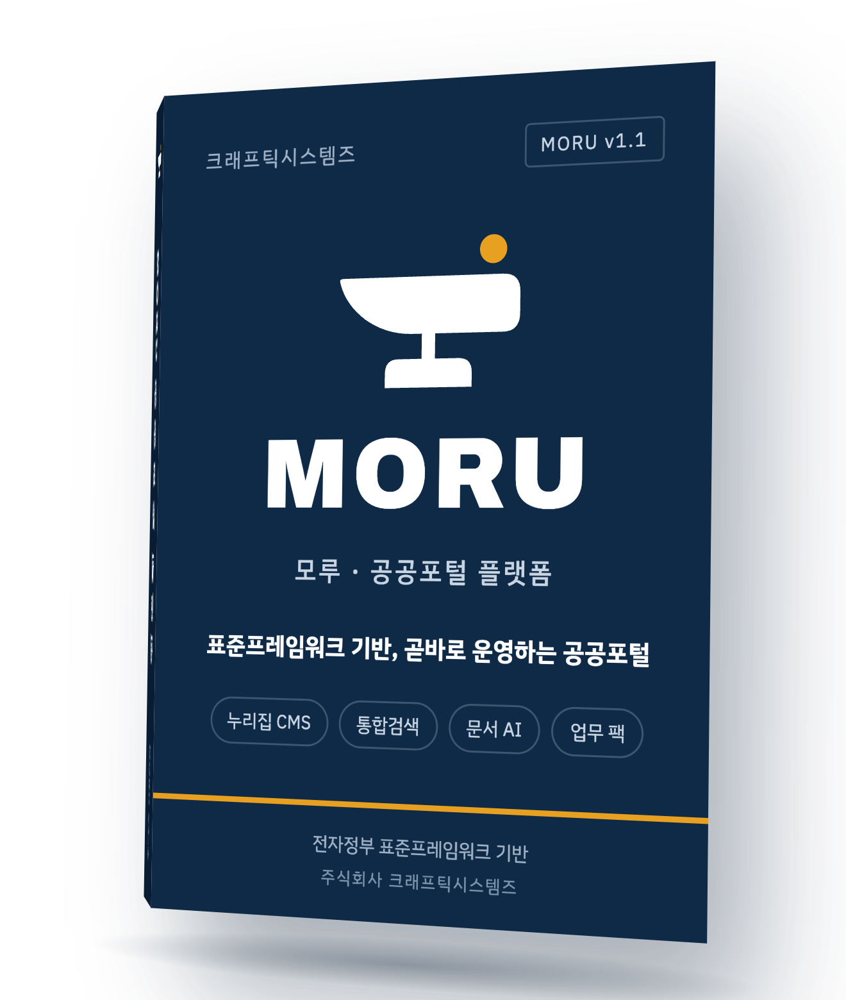
시연 데이터(가상 기관 「모루시」, 문서 7건)로 로컬에서 찍었다. 편집하지 않은 실제 동작이다.
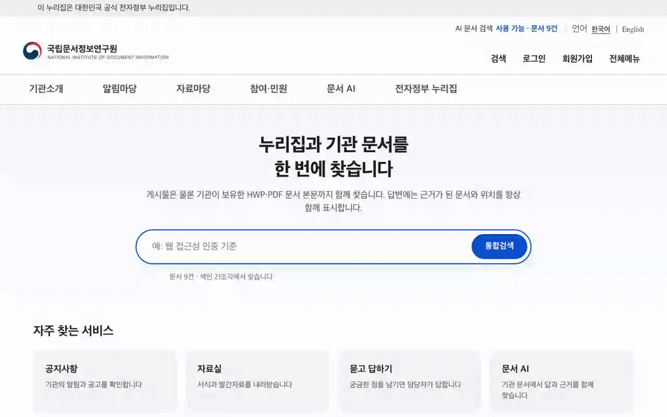
게시물과 기관 문서 본문을 한 번에 찾고, 검색어를 노랗게 표시한다.
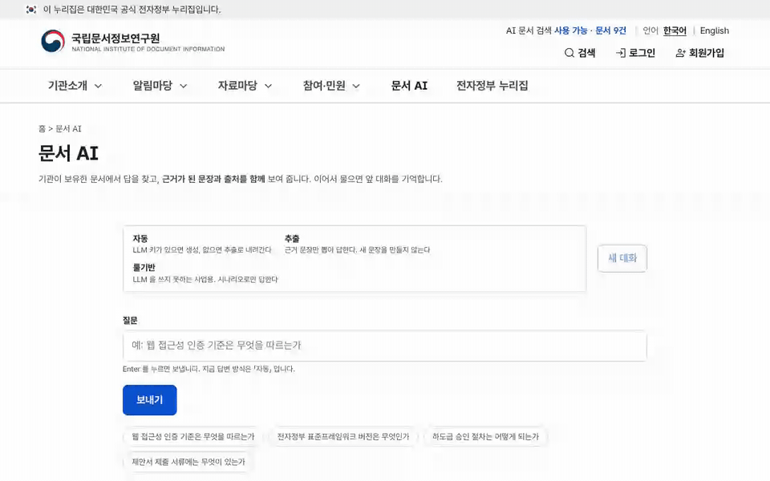
추출 모드. 답변 문장마다 「근거 확인」과 출처 번호가 붙는다.
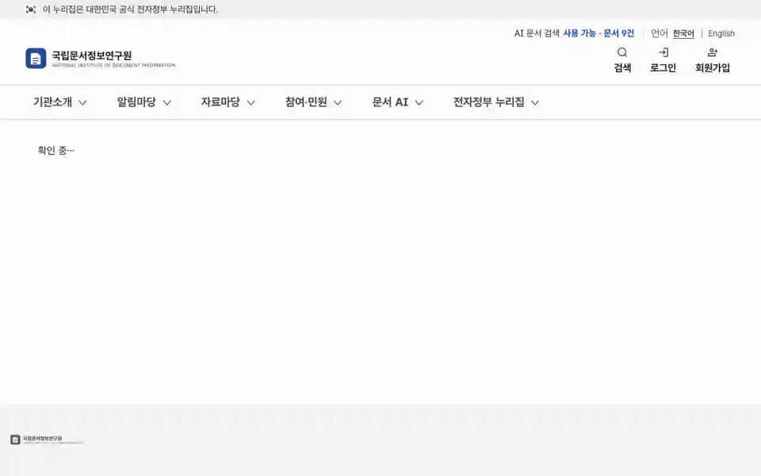
초안을 승인 요청하고 게시하면 누리집에 바로 나온다. 저장마다 버전이 남는다.
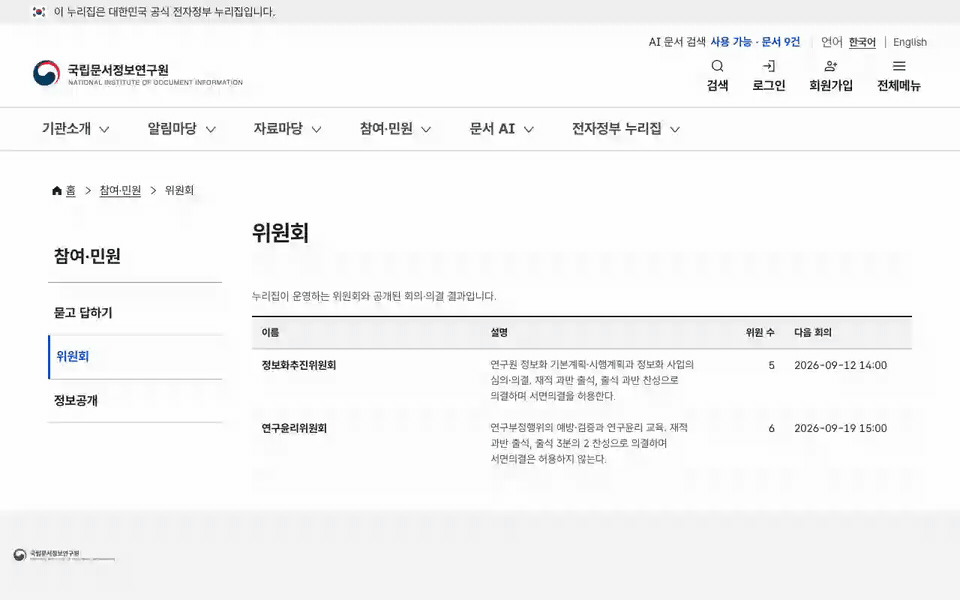
회의 결과·표수와 의결서. 해시로 봉인해 「위변조 확인: 이상 없음」을 표시한다.
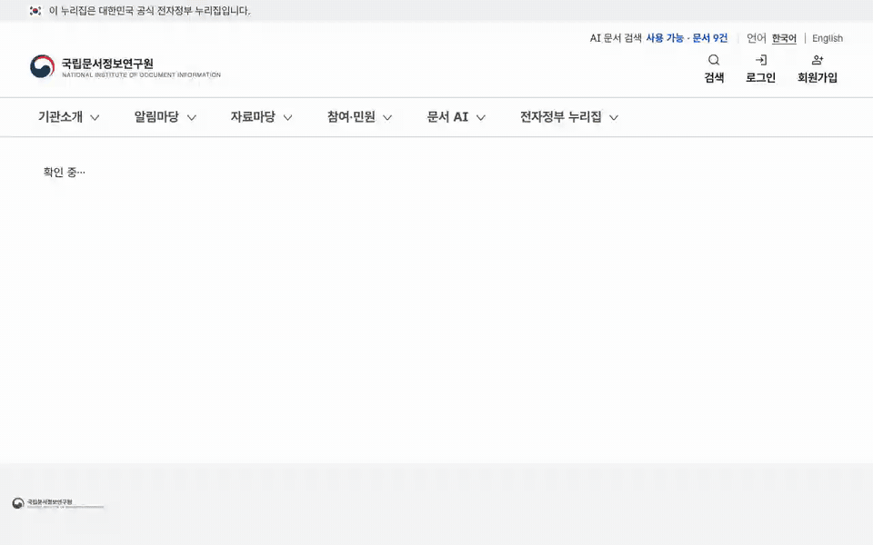
설정을 읽어 판정하고, CSRF·비밀번호 정책·헤더·오류 노출·CORS 는 자기 자신에게 요청을 보내 잰다.
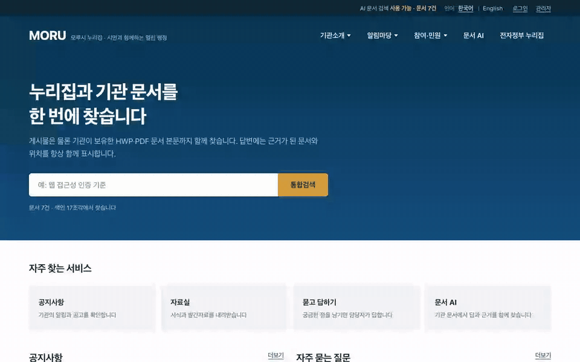
메뉴·게시판 이름·사이트 문구는 번역 표, 콘텐츠는 언어별 행. 없으면 기본 언어로 대신 낸다.
표준프레임워크는 프레임워크지 제품이 아니다. 사업마다 계정·권한·게시판·첨부·표준사전·배치를 다시 만든다. MORU 는 그 자리를 미리 채워 둔다.
HWP 5.0(OLE) · HWPX(ZIP+XML) · HWPML(XML) 세 형식을 외부 HWP 라이브러리 없이 읽는다. 확장자보다 내용(매직바이트)을 먼저 본다.
검색된 문서 조각과 정렬해 「근거 확인 / 부분 확인 / 근거 없음」으로 표시한다. 숫자·부정어·기관명이 출처와 다르면 「부분 확인」으로 내린다.
auto · extract · rule 세 모드가 같은 인터페이스를 쓴다. LLM 을 금지하는 사업은 모드를 내린다. 다른 제품을 만들지 않는다.
core 10 · portal 10 · ai 5 블록, 게시판 7 유형, 관리자 20탭, 업무 팩 1.
| core 10 | 계정·인증(잠금·임시 비밀번호) · 권한 RBAC(게시판별 읽기/쓰기 역할) · 조직·사용자 · 게시판 엔진 · 첨부(확장자·MIME·시그니처 3중 검사, ClamAV) · 코드·표준사전(DDL 컬럼명 검증) · 배치 스케줄러 · 감사로그(해시 체인) · 알림(포털·메일·SMS) · 연계 어댑터 |
| portal 10 | 메뉴·IA · 콘텐츠(승인·버전·복원) · 회원(약관 이력·본인확인 연계점) · 템플릿(기관명·테마·레이아웃을 데이터로) · 팝업·배너 · 접근성 컴포넌트 · 통합검색 · 개방 API(X-API-Key·일일 한도·OpenAPI 3.0) · 웹로그 통계 · 관리자 접근통제(IP·TOTP) |
| ai 5 | AI 게이트웨이(개인정보 마스킹·쿼터·서킷브레이커·DMZ 중계) · 문서 파싱 · 색인·검색(BM25·벡터·RRF) · 챗봇(멀티턴·시나리오·콘텐츠 초안) · 근거 검증(문장↔출처) |
| 게시판 7 유형 | 공지 · FAQ · 자료실 · 포토갤러리 · 묻고 답하기 · 동영상(youtube·naver·kakao·mp4) · E-Book(PDF 를 페이지 안에서) |
| 업무 팩 1 위원회 | 위원회·위원·회의·안건·표결·의결서. 정족수 %, 법정기한(통지 7일·송부 3일), 가부동수 규칙, 서면의결 이중 정족수, 의결서 해시 봉인. 관리 탭 1 · 공개 3면 · 위원 2면 |
| 관리자 20탭 | 배치 · 사용자·권한 · 조직 · 감사로그 · 접속로그 · 코드 · 표준사전 · 게시판 정의 · 메뉴 · 콘텐츠 · 사이트·템플릿 · 팝업·배너 · 접속 통계 · 개방 API · AI · 필터링 단어 · SMS · 알림 · 위원회 · 보안 점검 |
환경변수를 하나도 주지 않으면 ./deploy/run.sh 한 번으로 세 프로세스(portal :3000 · core :8080 · ai :8800)가 뜬다. 도커도, 별도 상용 SW 도 필요 없다. 기관 요구가 있을 때만 어댑터를 켠다.
| 층 | 기본 (설치 0) | 어댑터 |
|---|---|---|
| DB | PostgreSQL (운영) · H2 (로컬) | MariaDB · Oracle/Tibero — Flyway 벤더 폴더 + MyBatis databaseId |
| 검색 | SQLite + BM25 | OpenSearch(nori) · Elasticsearch |
| 벡터 | 꺼짐 | pgvector · sqlite-vec · OpenSearch kNN — 임베딩은 /v1/embeddings 규격(Ollama · vLLM · OpenAI) |
| LLM | 없음 (추출 모드) | OpenAI 호환 엔드포인트 |
| 형태소 | Kiwi | Nori — 표준용어 사전을 두 곳의 사용자 사전으로 공유 |
| 실행환경 | org.egovframe.rte 4.3.0 · Spring Boot 2.7 · Tomcat 9 · Java 17 · MyBatis · Flyway V1~V12(표 36개). 4.3 은 Spring 5.3 · javax 세대라 Tomcat 10 과는 짝이 아니다. | |
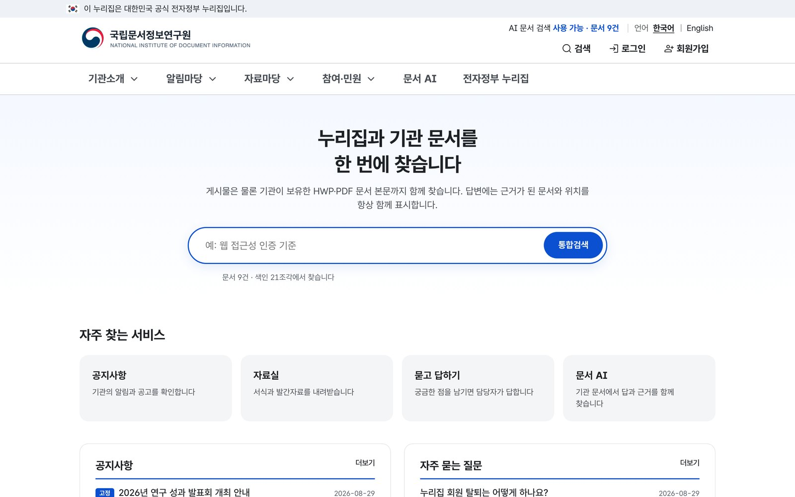
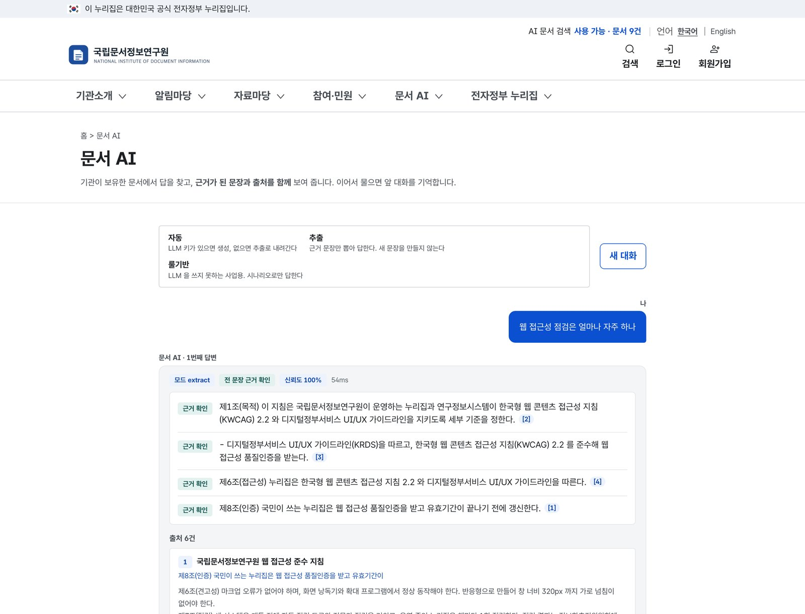
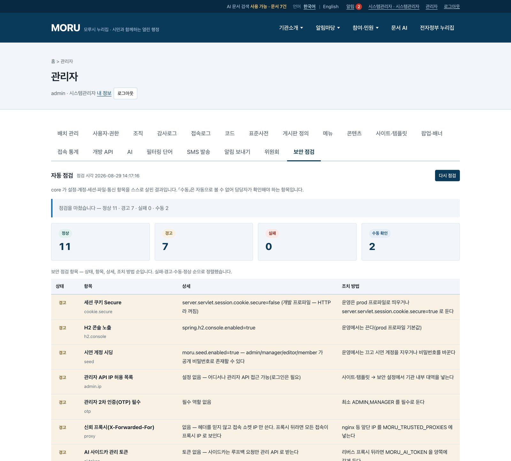
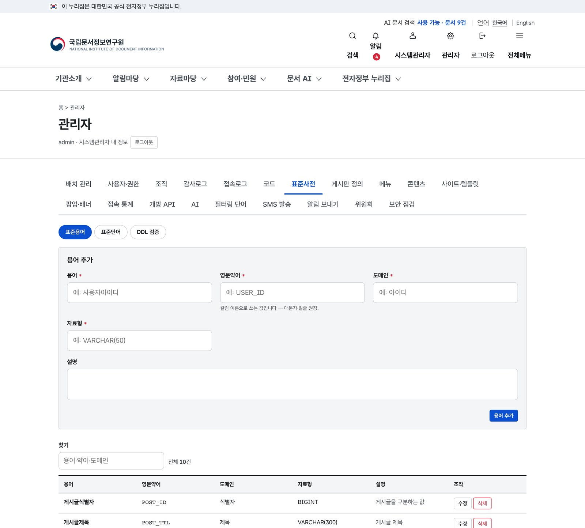
세 프로세스를 한 서버 또는 세 서버에 나눠 둔다. 클라우드 계정이나 외부 SaaS 에 붙지 않는다.
AI 사이드카를 빼고 core + portal 만 두거나, LLM 호출만 DMZ squid 로 중계한다.
빈 PostgreSQL 하나와 환경변수 여섯 개. Flyway 가 첫 기동에서 표 36개를 만든다. 절차는 소개서 10쪽.
문의 — 주식회사 크래프틱시스템즈 · GitHub Issues · 담당자·전화·전자우편 (기입 예정)